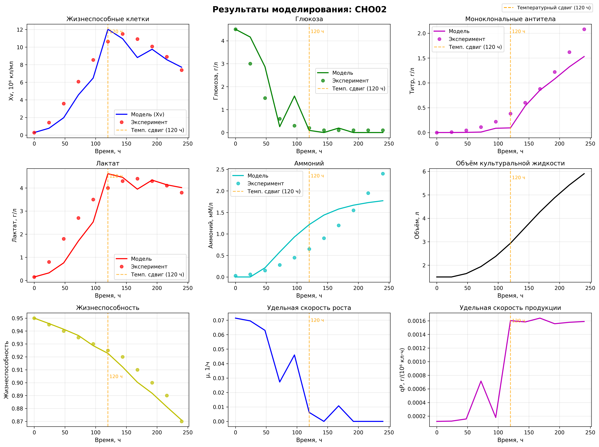
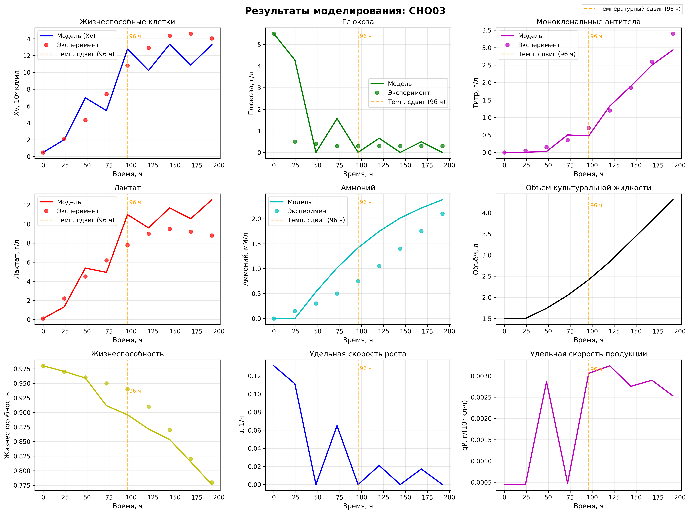
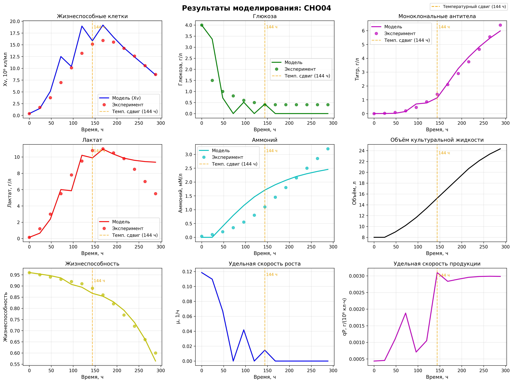
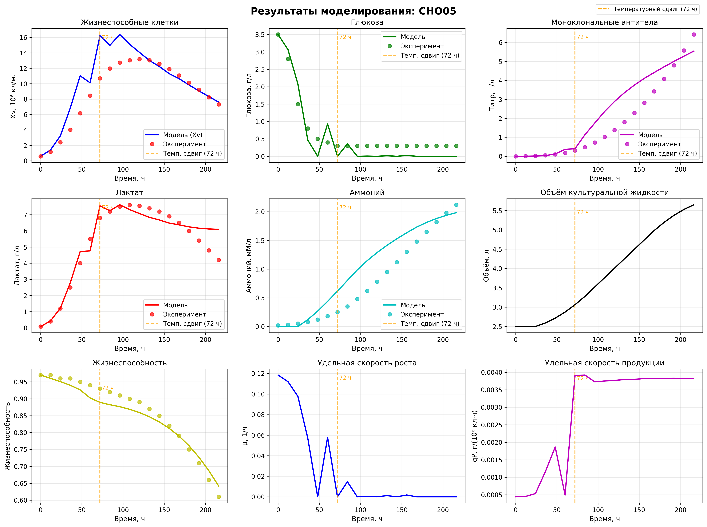
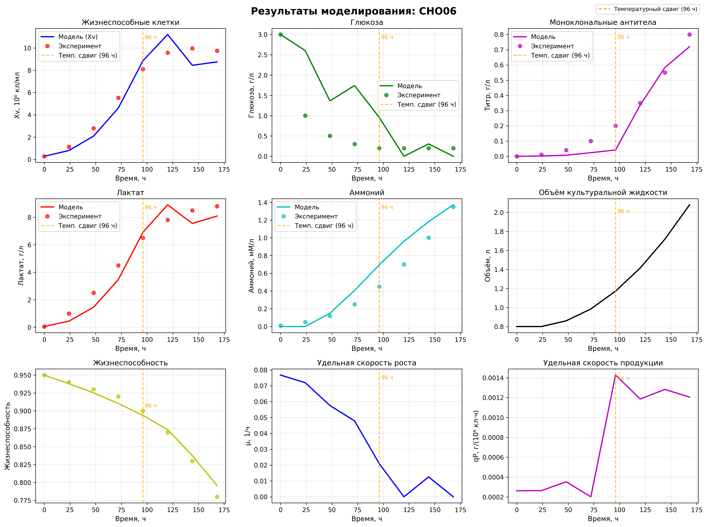
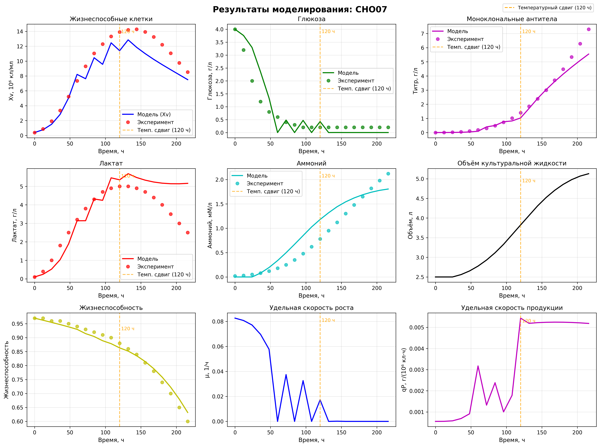
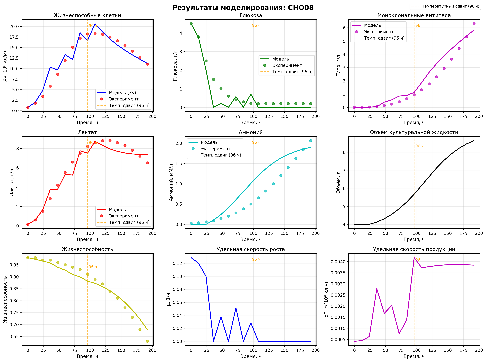
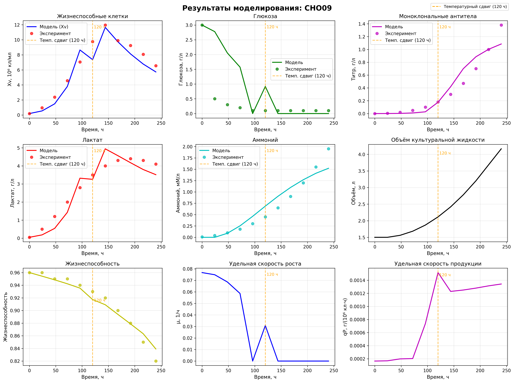

Дата генерации: 2026-01-22 11:53:00
Всего партий: 8
Средний R² по всем партиям и параметрам: 0.871 ± 0.107
Средняя относительная ошибка (MAPE): 27.4% ± 21.2%
Всего точек данных: 40
| Партия | Параметр | MAE | RMSE | R² | MAPE, % | Точек |
|---|---|---|---|---|---|---|
| CHO02 | TCD | 1.033 | 1.303 | 0.899 | 16.8 | 11 |
| CHO02 | Glucose | 0.433 | 0.678 | 0.768 | 105.9 | 11 |
| CHO02 | Lactate | 0.454 | 0.595 | 0.830 | 19.8 | 11 |
| CHO02 | Ammonium | 0.006 | 0.007 | 0.764 | 61.8 | 11 |
| CHO02 | Titer | 0.150 | 0.219 | 0.897 | 48.2 | 11 |
| CHO02 | Viability | 0.004 | 0.005 | 0.949 | 0.4 | 11 |
| CHO03 | TCD | 1.793 | 2.263 | 0.876 | 18.6 | 9 |
| CHO03 | Glucose | 0.766 | 1.353 | 0.305 | 195.7 | 9 |
| CHO03 | Lactate | 1.567 | 1.953 | 0.631 | 23.1 | 9 |
| CHO03 | Ammonium | 0.007 | 0.008 | 0.553 | 65.0 | 9 |
| CHO03 | Titer | 0.143 | 0.193 | 0.972 | 34.8 | 9 |
| CHO03 | Viability | 0.016 | 0.024 | 0.870 | 1.8 | 9 |
| CHO04 | TCD | 1.755 | 2.788 | 0.813 | 17.2 | 13 |
| CHO04 | Glucose | 0.459 | 0.646 | 0.547 | 75.0 | 13 |
| CHO04 | Lactate | 0.989 | 1.470 | 0.825 | 18.2 | 13 |
| CHO04 | Ammonium | 0.007 | 0.008 | 0.827 | 59.1 | 13 |
| CHO04 | Titer | 0.168 | 0.217 | 0.990 | 25.0 | 13 |
| CHO04 | Viability | 0.012 | 0.016 | 0.981 | 1.6 | 13 |
| CHO05 | TCD | 1.838 | 2.717 | 0.688 | 21.8 | 19 |
| CHO05 | Glucose | 0.306 | 0.333 | 0.861 | 80.3 | 19 |
| CHO05 | Lactate | 0.491 | 0.680 | 0.922 | 9.9 | 19 |
| CHO05 | Ammonium | 0.005 | 0.006 | 0.807 | 68.3 | 19 |
| CHO05 | Titer | 0.642 | 0.863 | 0.818 | 59.3 | 19 |
| CHO05 | Viability | 0.022 | 0.025 | 0.945 | 2.6 | 19 |
| CHO06 | TCD | 1.023 | 1.207 | 0.932 | 15.5 | 8 |
| CHO06 | Glucose | 0.647 | 0.871 | 0.078 | 180.6 | 8 |
| CHO06 | Lactate | 0.727 | 0.813 | 0.937 | 20.0 | 8 |
| CHO06 | Ammonium | 0.002 | 0.003 | 0.886 | 49.9 | 8 |
| CHO06 | Titer | 0.050 | 0.071 | 0.933 | 48.7 | 8 |
| CHO06 | Viability | 0.006 | 0.008 | 0.981 | 0.7 | 8 |
| CHO07 | TCD | 1.844 | 2.311 | 0.845 | 14.6 | 19 |
| CHO07 | Glucose | 0.359 | 0.488 | 0.794 | 84.8 | 19 |
| CHO07 | Lactate | 0.762 | 1.025 | 0.560 | 27.0 | 19 |
| CHO07 | Ammonium | 0.004 | 0.004 | 0.882 | 50.6 | 19 |
| CHO07 | Titer | 0.275 | 0.530 | 0.946 | 24.9 | 19 |
| CHO07 | Viability | 0.014 | 0.016 | 0.978 | 1.8 | 19 |
| CHO08 | TCD | 1.655 | 1.986 | 0.922 | 15.4 | 17 |
| CHO08 | Glucose | 0.353 | 0.496 | 0.858 | 88.1 | 17 |
| CHO08 | Lactate | 0.504 | 0.634 | 0.953 | 8.6 | 17 |
| CHO08 | Ammonium | 0.005 | 0.006 | 0.754 | 64.7 | 17 |
| CHO08 | Titer | 0.388 | 0.511 | 0.933 | 50.7 | 17 |
| CHO08 | Viability | 0.020 | 0.024 | 0.949 | 2.5 | 17 |
| CHO09 | TCD | 0.974 | 1.225 | 0.914 | 17.2 | 11 |
| CHO09 | Glucose | 0.621 | 0.995 | -0.463 | 286.0 | 11 |
| CHO09 | Lactate | 0.439 | 0.504 | 0.896 | 21.2 | 11 |
| CHO09 | Ammonium | 0.003 | 0.003 | 0.907 | 41.5 | 11 |
| CHO09 | Titer | 0.088 | 0.133 | 0.909 | 46.2 | 11 |
| CHO09 | Viability | 0.008 | 0.009 | 0.956 | 0.8 | 11 |
Конечный титр (модель): 1.53 г/л
Пиковая Xv: 12.03 ×10⁶ кл/мл
Финальная жизнеспособность: 87.10%
График моделирования:
Средний R²: 0.868
Средний MAPE: 29.4%
Конечный титр (модель): 2.94 г/л
Пиковая Xv: 13.34 ×10⁶ кл/мл
Финальная жизнеспособность: 77.62%
График моделирования:
Средний R²: 0.780
Средний MAPE: 28.6%
Конечный титр (модель): 5.98 г/л
Пиковая Xv: 19.18 ×10⁶ кл/мл
Финальная жизнеспособность: 56.38%
График моделирования:
Средний R²: 0.887
Средний MAPE: 24.2%
Конечный титр (модель): 5.54 г/л
Пиковая Xv: 16.39 ×10⁶ кл/мл
Финальная жизнеспособность: 64.17%
График моделирования:
Средний R²: 0.836
Средний MAPE: 32.4%
Конечный титр (модель): 0.72 г/л
Пиковая Xv: 11.20 ×10⁶ кл/мл
Финальная жизнеспособность: 79.58%
График моделирования:
Средний R²: 0.934
Средний MAPE: 27.0%
Конечный титр (модель): 5.55 г/л
Пиковая Xv: 12.85 ×10⁶ кл/мл
Финальная жизнеспособность: 63.19%
График моделирования:
Средний R²: 0.842
Средний MAPE: 23.8%
Конечный титр (модель): 5.82 г/л
Пиковая Xv: 20.64 ×10⁶ кл/мл
Финальная жизнеспособность: 67.87%
График моделирования:
Средний R²: 0.902
Средний MAPE: 28.4%
Конечный титр (модель): 1.09 г/л
Пиковая Xv: 11.66 ×10⁶ кл/мл
Финальная жизнеспособность: 83.91%
График моделирования:
Средний R²: 0.916
Средний MAPE: 25.4%